In this chapter, you will learn how
to make two types of drawings. Drawings help us to show others
what our ideas look like. Drawings also help us to evaluate our
ideas, to become aware of problems and to develop
solutions.
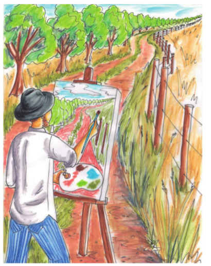
Figure 1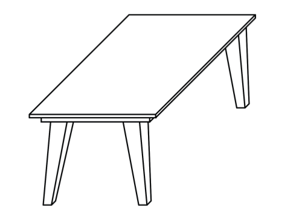
Figure 2 (Drawing A) 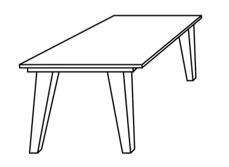 Figure 3 (Drawing B)
Two types of drawings
Look at drawings A
and B again. Do you see drawings of two different tables, or
two different drawings of the same table? Take your time and
think carefully before you answer.
Look at drawing A
and drawing B on the opposite page. Also look at drawing C and
drawing D on the next page. Is drawing C or D the same as
drawing A, only smaller? Explain why you say so.
How do drawings A
and B differ?
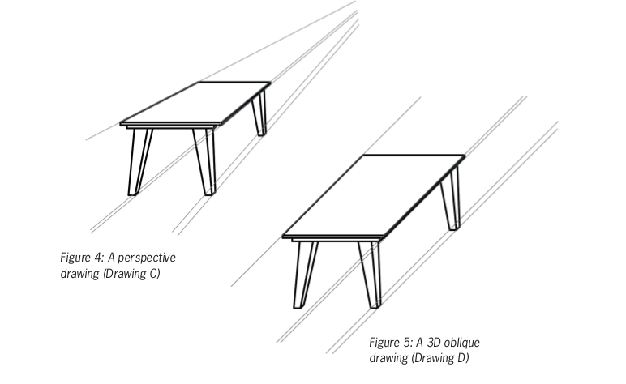
Drawings such as Figure 4 (drawing C) are called
perspective drawings, or 3D artistic drawings.
In a perspective drawing, the artist tries to show
what she actually sees. You cannot take accurate
measurements from perspective drawings.
Drawings such as Figure 5 (drawing D) are called
3D oblique drawings. They look different from
what you actually see when you look at the object.
Measurements can be taken from 3D oblique
drawings.
In the next lesson, you will make 3D
oblique drawings.
3d oblique drawing
Make a 3d oblique sketch
You can make
a good 3D oblique sketch of a stove if you follow the
instructions given below.
It is
easier if you first draw a box that shows the shape of the
stove. Do that on the next page. Do not use a ruler.
To draw a
box, first draw a rectangle to show the front of the box, as
shown in step 1 below. Draw the rectangle in the left lower
part of the page.
Draw
another rectangle of the same size as shown in step 2 below.
Then draw sloping lines as in step 3 to show the edges of the
box that go from the front to the back.
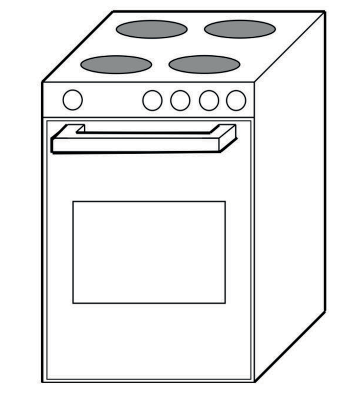
Figure 6
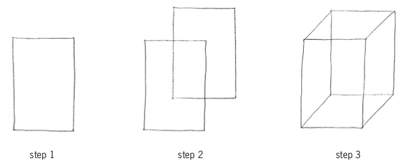
Figure 7
The word sketch is often used to indicate a drawing
that is made without a ruler or other drawing
instruments.
Instead of saying sketch, you can also say free-hand
drawing.
Make your 3D oblique
sketch on this page. Make it big.
Change your box into a stove
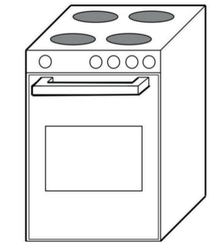
Figure 8
Now see if you can change your box into
a stove. Here are some tips:
The plates
on top of a stove are circles. On a drawing like this, they
will be squashed circles (ellipses).
The
circles for the knobs are real circles. This is because
everything on the front of the drawing is the same as it is
in real life.
Look at
how the handle is drawn. It comes out of the front face. To
do this, use sloping lines coming forward.
Make all
lines that you can see on the objects thick.
Something to do at home
3D oblique drawings are
easier to make on grid paper, like the one on the next page.
Make a better drawing of the stove on the grid paper. One of
the sloping lines is already drawn.
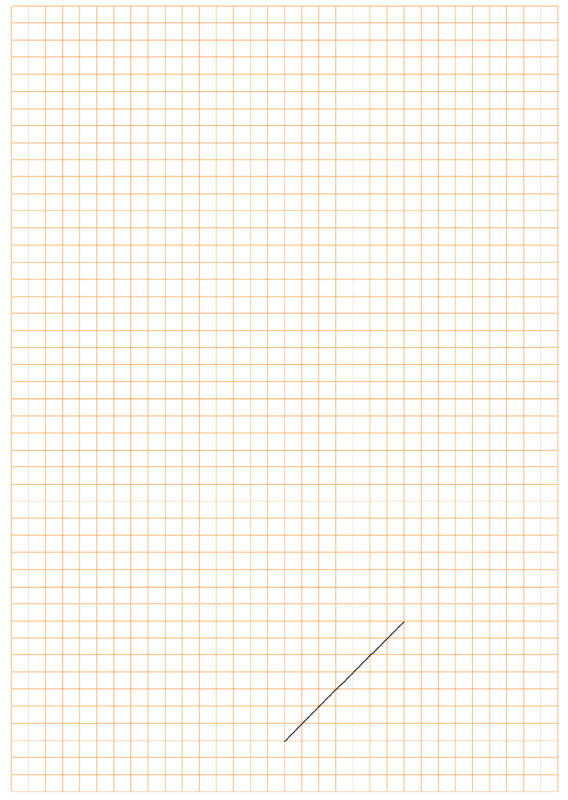
Accurate 3d oblique drawing
The drawing below is an accurate
oblique drawing of the stove.
Write down the
length, height and breadth of this stove.
Now measure the
length, height and breadth on the drawing with a ruler.
What do you notice
about the breadth line? Is it drawn to the same scale as the
length and height lines?
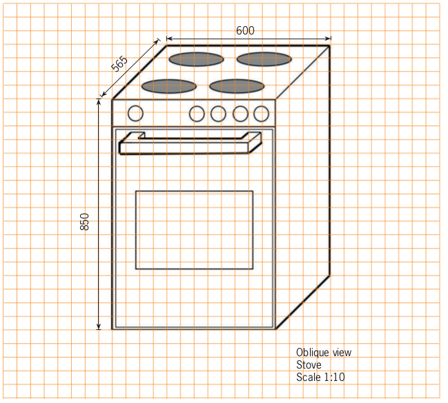
Figure 9
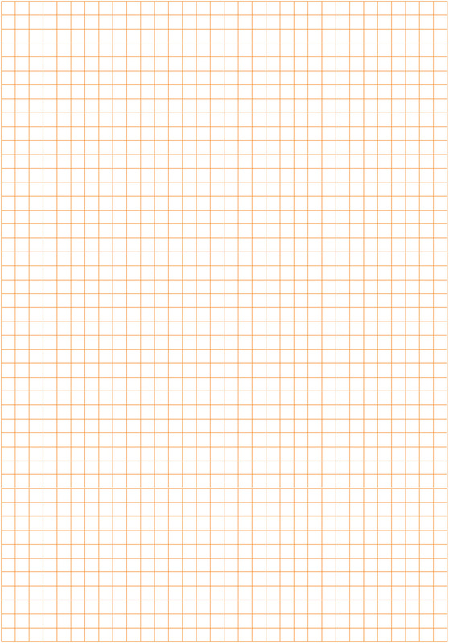
A few important things about oblique
drawings
For the front view of an oblique drawing, we use true scale
measurements. So if the length of the object is 600 mm and the scale is 1:10,
you will draw the length as 60 cm (600 mm).
But in the sloping breadth direction, you must halve the true scale measurement. So if
the breadth is 565 mm and the scale is 1:10, you must draw the breadth line as 282,5 mm or
28,25 cm.
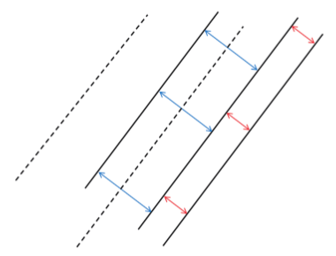
Figure 10
Use the grid on the
previous page to make an accurate 3D oblique drawing of the
stove, with scale 1:5.
In 3D oblique drawings, all lines in
the breadth are parallel, as shown above.
Perspective drawing
When we see something far away, it
looks small. When you are close to an object, it looks big.
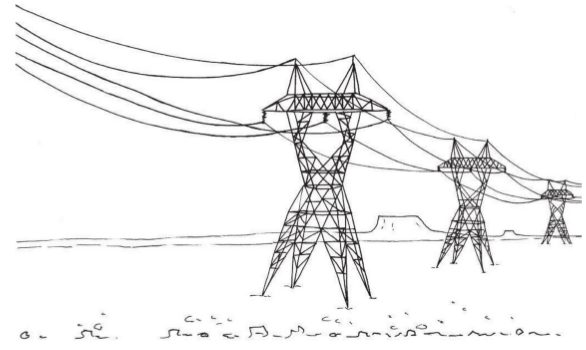Figure 11
When you make a 3D drawing that shows
things getting smallerin the distance, it is called a
perspective drawing.
Look at this
sketch of a fence. It has been drawn going back into the
distance.
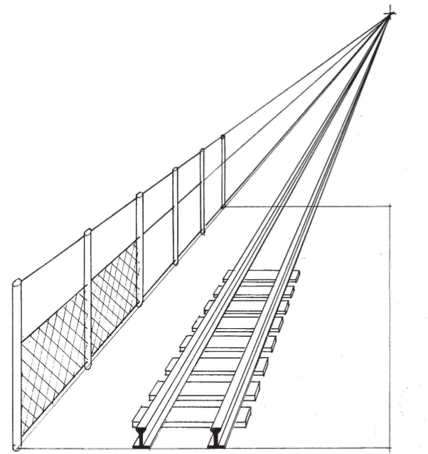
Figure 12
Use the steps below to draw the fence on the next page
From the bottom
left-hand corner of your page, draw a fence post. This will be
the tallest post because it is the closest to you.
In the top
right-hand corner of the page, draw a point. This point is
called the vanishing point (VP).
It represents a distance so far away that you can no longer see
how tall something is.
From the top of the
front post, draw a thin guideline to the vanishing point (VP).
You can use a ruler for this.
From the bottom of
the front post, draw another thin guideline to the vanishing
point.
Draw a second post
behind the first. The bottom of this post must start at the
bottom guideline and it must stop at the top guideline.
Carry on drawing
more posts going backwards into the distance.
Keep in mind that
the posts will look as if they are getting closer and closer
together.
Now add some
crossing lines to represent fence wire.
Draw the fence
on this page.
Draw a matchbox in perspective
In the bottom
left-hand corner of this page, draw a rectangle to represent
the front of the matchbox. Part of the rectangle is already
drawn for you.
From each
corner of the rectangle, draw a thin guideline to the vanishing
point. You can use a ruler.
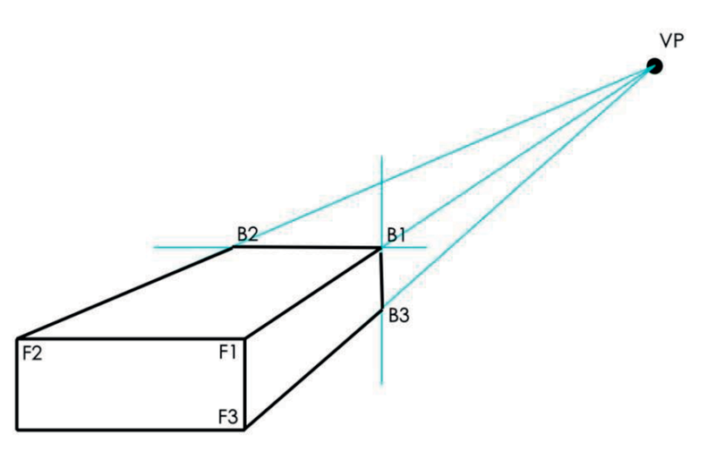
Figure 13
Moving back along the guideline from
the vanishing point, mark off a point (B1), which makes the
breadth of the matchbox look right.
From this point (B1), draw a
vertical line down to the bottom
guideline. This is the side edge at the back of the
matchbox.
From the same
point (B1), draw a horizontal
line towards the left hand guideline. This will represent the
top edge at the back.
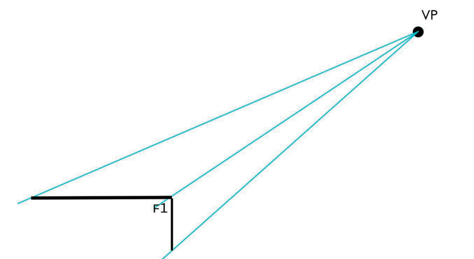Figure 13
Perspective drawing with texture and shading
Look at the
open matchbox shown. Thick and thin lines have been used to
make the edges stand out. Try to do this on the matchbox you
have already drawn, or on a new drawing.
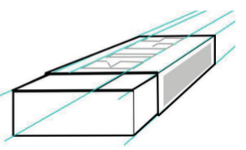
Figure 15
Draw an
open matchbox using single vanishing point perspective in the
space below.
Add more shading, and even colour
When a
surface is flat, the whole surface looks as if it is the same
colour. But some surfaces look darker than others, depending on
where the light is coming from.
To shade a box so that it looks
3D,draw a new box in the space belowand do the following:
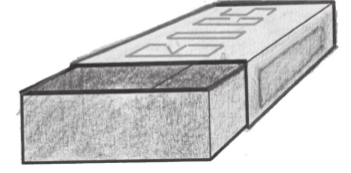
Figure 16
Colour the
front, top and sidesurfaces lightly in one colour. You can
use a pencil or a coloured pencil.
Choose the
face that will be the second darkest. Colour this surface a
second time.
Choose the
face that will be the darkest. If the light is behind the
drawing, this will be the front face. Then lightly shade this
surface two more times, so the darkest face will have been
coloured three times.
Next week
Next week, you will learn about
mechanical systems. You will explore how levers work to make it
easier to move things.